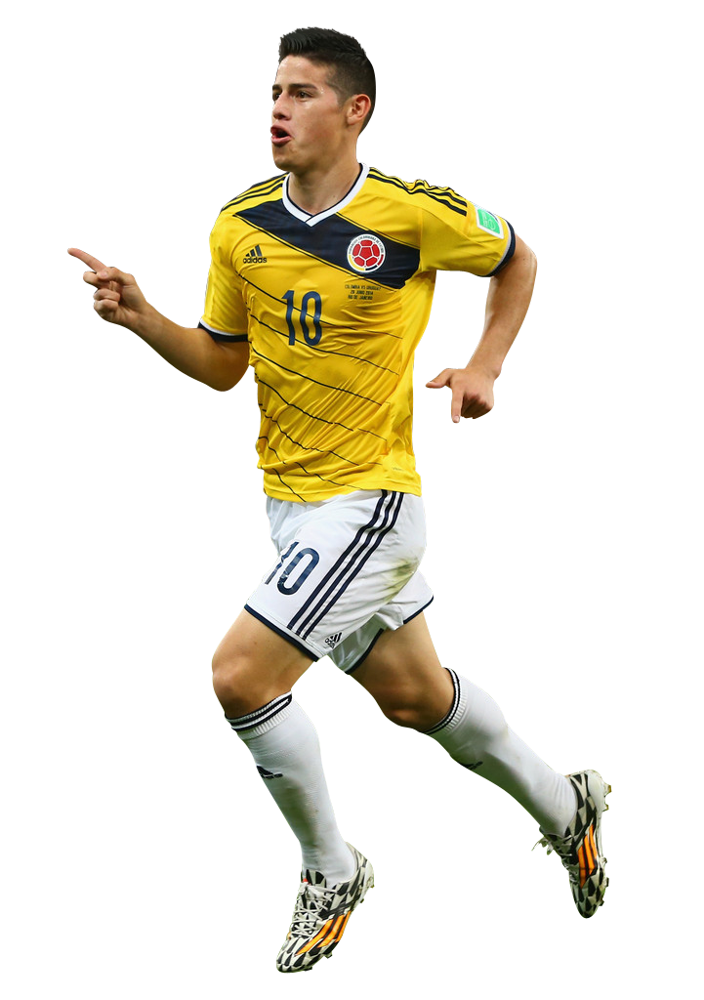

James
James David Rodríguez Rubio es un futbolista colombiano que juega como centrocampista en el Real Madrid Club de Fútbol de la Primera División de España.
Recibió en 2009, 2012 y 2014 el premio de jugador revelación en la Primera División de Argentina y en la Primeira Liga, ya que el 13 de diciembre de 2009 se consagró campeón del Torneo Apertura con el Banfield a la edad de 18 años, siendo el extranjero más joven en salir campeón en Argentina, logrando un hecho inédito y nunca antes ocurrido en la historia del club del sur de Buenos Aires.
En 2011, logró coronarse campeón de la UEFA Europa League. Fue pieza importante en la corrida del "Equipo Dragón" en el transcurso del torneo continental.
En la Ligue 1 respectivamente, siendo además elegido en 2014 por el Centro Internacional de Estudios del Deporte segundo mejor centrocampista ofensivo de Europa.
Internacional absoluto con la selección colombiana desde que debutase en el año 2011, fue vencedor de la Bota de Oro del Mundial de Brasil 2014 tras anotar seis tantos que permitieron que su selección alcanzase los cuartos de final del torneo, siendo hasta la fecha la mejor actuación del combinado cafetero en una cita mundialista.
Después de haber realizado un notable mundial, el 22 de julio del 2014 James fue presentado como nuevo jugador del Real Madrid C. F., que pagó 80 millones de euros, convirtiéndose en el quinto fichaje más costoso de la historia en ese momento.
El 12 de enero del 2015, James recibe el Premio Puskás de 2014, convirtiéndose en el primer colombiano en haber ganado este premio.
